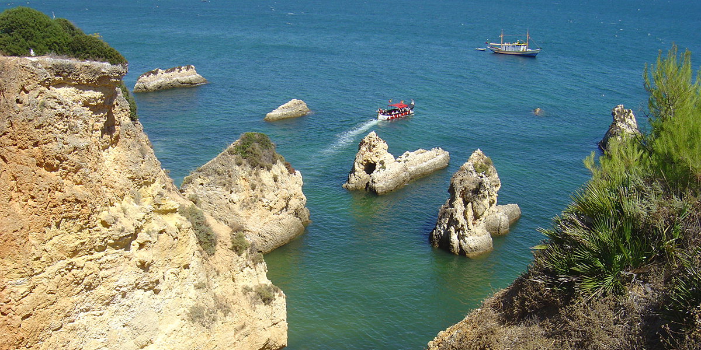
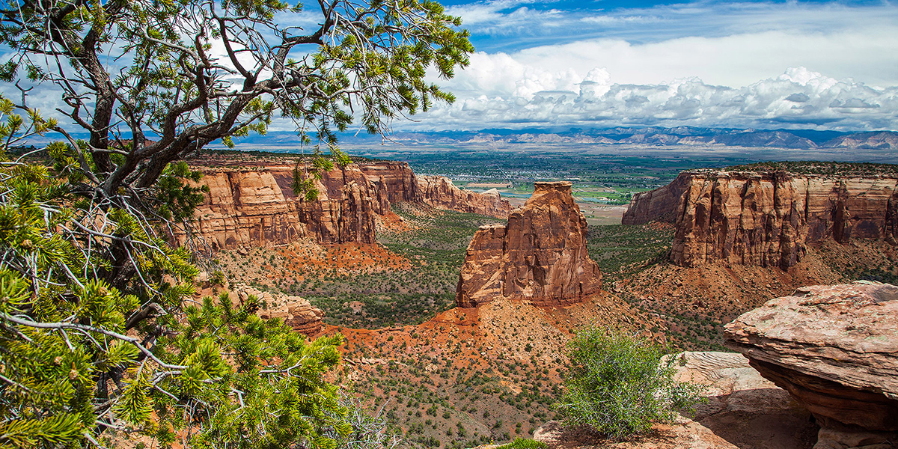

West Cliff
West Cliff is the closest to Irvine and the most visited by students and families. Its coastal views and easy access make it ideal for sightseeing and beachside walks.
- Ocean views
- Easy access from Irvine
- Popular picnic spots
Each cliff offers a unique experience, from ocean views and mountain air to canyon adventure and riverfront recreation. Whether you are seeking a quiet retreat or an active outdoor getaway, California's cliffs deliver unforgettable scenery.

West Cliff is the closest to Irvine and the most visited by students and families. Its coastal views and easy access make it ideal for sightseeing and beachside walks.

North Cliff rises above the surrounding mountains and offers broad views, quiet hiking trails, and plenty of wildlife watching opportunities.

East Cliff is known for its riverfront setting and peaceful outdoor spaces that are perfect for camping, photography, and relaxing days outdoors.

South Cliff features dramatic canyon views and adventurous terrain that attracts hikers, campers, and visitors who want a more rugged experience.